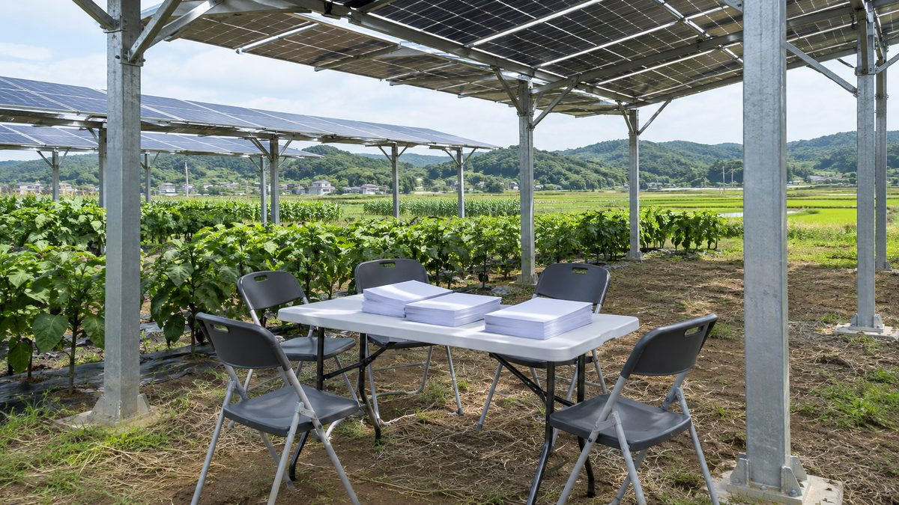

영농형 태양광 시행령안, 농업회사법인 참여 제한 논란…"전문기업과 함께할 길 열어야" 기고 주장

진우삼 기업재생에너지재단 상임이사, 영농조합법인만 발전사업 허용하는 규정 재검토 요구
진우삼 기업재생에너지재단 상임이사(한국RE100위원회 위원장)가 영농형 태양광 시행령안이 기업의 참여를 지나치게 좁힌다며 재검토를 주장했다. 진 이사는 영농형 입법 방향과 농민이 발전사업의 주체가 돼야 한다는 점에는 동의한다고 밝혔다. 다만 시행령안 제7조제6호가 재생에너지지구에서는 영농조합법인에만 발전사업을 허용하고 농업회사법인은 매립지에서만 허용한다고 지적했다. 그는 이런 제한이 규모화·집적화와 맞지 않고, 자금 조달과 시공·운영 역량을 갖춘 기업의 참여를 막는다고 주장했다. 대안으로 지구 안 농업회사법인 참여 재검토, 발전공기업·지방공기업의 투자 허용, 표준 주주간계약과 사업협약 마련, 허가 조건과 정기 이행점검을 제시했다. 진 이사는 "농민을 위한 제도는 농민이 성공할 수 있는 구조까지 갖춰야 한다"고 강조했다.
시민에너지 관점
이 글은 기업 참여를 넓히자는 필자 한 사람의 주장이며, 필자도 농민이 발전사업의 주체여야 한다는 원칙에는 동의했다. 기업이 들어오면 농민의 몫이 밀려난다는 우려가 있지만, 쟁점은 기업이 참여하느냐가 아니라 지분과 의사결정을 누가 쥐느냐에 있다. 시공과 운영은 전문기업이 계약으로 맡고 발전사업의 주체와 수익은 농민과 주민 조합이 갖는 시민주도·지역 소유 구조가 농민의 성공과 규모화를 함께 이룰 길이다. 필자가 제안한 표준 주주간계약을 만든다면 농민 조합의 지분과 의결권, 지역 수익 환원 기준부터 넣어야 하고, 정부는 그 기준을 시행령 논의 단계에서 공개해야 한다.
출처: 전기신문 2026-11-05 진우삼(기업재생에너지재단 상임이사·한국RE100위원회 위원장, 기고) 원문 보기
営農型太陽光の施行令案、農業会社法人の参加制限が論点に…「専門企業と共にする道を開くべき」と寄稿で主張
チン・ウサム企業再生エネルギー財団常任理事、営農組合法人だけに発電事業を認める規定の再検討を要求
チン・ウサム企業再生エネルギー財団常任理事（韓国RE100委員会委員長）は、営農型太陽光の施行令案が企業の参加を狭めすぎているとして、再検討を主張した。チン理事は、営農型の立法の方向と、農民が発電事業の主体になるべきだという点には同意すると述べた。ただ、施行令案第7条第6号が、再生可能エネルギー地区では営農組合法人にだけ発電事業を認め、農業会社法人には埋立地でのみ認めていると指摘した。こうした制限は規模化・集積化に合わず、資金調達や施工・運営の力を持つ企業の参加を妨げると主張した。代案として、地区内での農業会社法人の参加の再検討、発電公社・地方公社の投資容認、標準の株主間契約と事業協約の整備、許可条件と定期的な履行点検を挙げた。チン理事は「農民のための制度は、農民が成功できる仕組みまで備えなければならない」と強調した。
市民エネルギーの視点
この文章は企業参加を広げようという筆者一人の主張であり、筆者も農民が発電事業の主体であるべきだという原則には同意している。企業が入れば農民の取り分が押しのけられるという懸念があるが、争点は企業が参加するかどうかではなく、持ち分と意思決定を誰が握るかにある。施工と運営は専門企業が契約で担い、発電事業の主体と収益は農民と住民の組合が持つ市民主導・地域所有の構造こそが、農民の成功と規模化を両立させる道だ。筆者が提案する標準の株主間契約をつくるなら、農民組合の持ち分と議決権、地域への収益還元の基準から盛り込むべきで、政府はその基準を施行令の議論の段階で公開すべきだ。
出典: 전기신문 2026-11-05 Jin Woo-sam (executive director, Corporate Renewable Energy Foundation; chair, Korea RE100 Committee; op-ed contributor) 原文を読む
农光互补施行令草案限制农业公司法人参与引发争议…投稿主张"应为专业企业合作打开通道"
企业可再生能源财团常务理事陈宇森要求重新审视仅允许农业合作法人开展发电业务的规定
企业可再生能源财团常务理事陈宇森（韩国RE100委员会委员长）主张，农光互补（营农型光伏）施行令草案过度限制了企业参与，应重新审视。陈理事表示，同意农光互补的立法方向，也同意农民应成为发电业务主体。但他指出，施行令草案第7条第6款规定，在可再生能源园区内仅允许营农合作法人开展发电业务，农业公司法人只能在填海地开展。他主张，这种限制与规模化、集约化不符，并阻碍了具备融资、施工和运营能力的企业参与。作为替代方案，他提出重新审视园区内农业公司法人的参与、允许发电公企业和地方公企业投资、制定标准股东协议和项目协议，以及设定许可条件并定期检查履行情况。陈理事强调："为农民设立的制度，必须具备让农民能够成功的结构。"
市民能源视角
这篇文章是作者一人提出的扩大企业参与的主张，作者本人也同意农民应当是发电业务主体这一原则。有人担心企业进入会挤占农民的份额，但争议的关键不在于企业是否参与，而在于谁掌握股权和决策权。施工和运营由专业企业通过合同承担，发电业务主体和收益归农民与居民合作社所有，这种市民主导、地方所有的结构，才是兼顾农民成功与规模化的路径。若按作者建议制定标准股东协议，应先写入农民合作社的股权、表决权和向地方返还收益的标准，政府也应在施行令讨论阶段公开这些标准。
来源: 전기신문 2026-11-05 진우삼（陈宇森，企业可再生能源财团常务理事·韩国RE100委员会委员长，投稿） 查看原文
Draft agrivoltaics decree limits agricultural corporations' role; op-ed argues "open a path to work with specialist firms"
Jin Woo-sam of the Corporate Renewable Energy Foundation asks for a rethink of the rule allowing only farming associations to run power projects
Jin Woo-sam, executive director of the Corporate Renewable Energy Foundation and chair of the Korea RE100 Committee, argued that the draft enforcement decree for agrivoltaics narrows corporate participation too far and should be reconsidered. Jin said he agrees with the direction of the legislation and with the principle that farmers should be the main operators of power projects. He pointed out, however, that Article 7, item 6 of the draft allows only farming association corporations to run power projects in renewable energy zones, while agricultural business corporations are allowed only on reclaimed land. He argued that this restriction clashes with scaling up and clustering, and keeps out companies with the financing, construction and operating capacity. As alternatives, he proposed reviewing the role of agricultural business corporations inside the zones, allowing investment by power-generation and local public corporations, drawing up a standard shareholders' agreement and project agreement, and setting permit conditions with regular compliance checks. "A system for farmers must also have a structure in which farmers can succeed," Jin said.
Citizen Energy View
This is the argument of a single contributor for wider corporate participation, and he himself accepts that farmers should be the main operators. There is a fear that bringing in companies will push farmers' share aside, but the real question is not whether companies take part; it is who holds the shares and the decisions. A citizen-led, locally owned structure, in which specialist firms build and operate under contract while farmer and resident cooperatives hold the project and its income, is the way to achieve both farmers' success and scale. If the standard shareholders' agreement he proposes is drawn up, it should start with the cooperative's stake, voting rights and local income-sharing rules, and the government should publish those standards while the decree is still under discussion.
Source: 전기신문 2026-11-05 Jin Woo-sam (executive director, Corporate Renewable Energy Foundation; chair, Korea RE100 Committee; op-ed contributor) Read the original